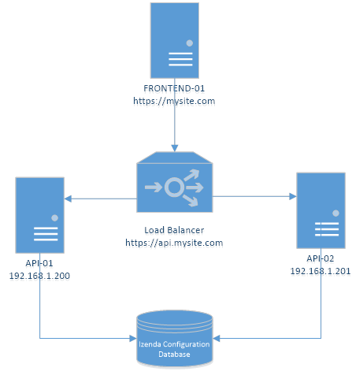

Load Balancing¶
Introduction¶
The Izenda application can be load balanced to offer better performance and scalability. The most common scenario would be to load balance the API among two or more servers. The diagram below assumes that SSL is terminated by the load balancer. To clarify, traffic to the load balancer is encrypted and the load balancer sends unencrypted traffic to the API server(s) in a trusted network
Configuration¶
- Update the WebApiUrl value in the izenda_config.js file with the IP or host name of the load balancer.
- Update the WebApiUrl in the [IzendaSystemSetting] table with the hostname or IP of the load balancer.
